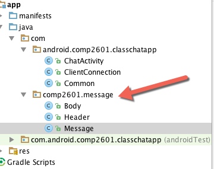

COMP 2601 Winter 2016
Ex 14 Networking with Message Objects
© L.D. Nel 2016
Revisions -none yet
Description:
For this exercise you will need Eclipse, installed on you computer.
The purpose of this exercise is to break away from the client and server sending each other simple strings and instead exchange message objects. This is much more realisitic and reflects how most client server exchanges are done including the HTTP protocol.
You need to demonstrate your exercise to the TA or Prof. before you leave the class to get credit for it. Marks: 2 or completion, 1 for partial progress, 0 for no show or no progress. (A mark of 1 can be upgraded to 2 is show us your completed work within one week of this exercise.)
Instructions:
Preliminary:
The demo code provided consists of the working request-response server from the previous exercise that supports multiple clients but does not broadcast to all clients. (It's bascically the answer code from problem #2 in the last exercise supporting multiple clients having one-on-one chats with the server.) Connect to the server using the android client provided using an AVD android virtual device accessing the server at the local host address:
10.0.2.2:3010
(Note the simple java client provided will NOT work until the required changes are made to the server. If you run against the demo server it will hang -an interesting debugging exercise to figure out where exactly it hangs and why.)
We want to modify the client - server exchange to use message objects rather than simple strings. Examine the server code provided in eclipse and notice a package is included that defines a Message object along with helper classes: Header and Body. A message consists of a header and a body. The header contains information such as the type of message, who the sender is, and who the receiver is. The body is intended to be the data, or payload, of the message. Examine the code provided. The message class defines some constants and you can add to these whatever you find necessary.
We want the client and server to exchange instances of these message objects. To send a message an object will be serialized and inserted into an ObjectOutputStream. To read an object it will be read from an ObjectInputStream. That is, we will use java's default serialization of objects which requires that they extend the Serializable interface.
Problem 1 -Creating Message Objects.
Find all the places in the server that sends a message to clients. Create a message object intended to represent the message, instead of the simple strings currently sent. Find the places in the server that receive message strings and modify them to expect message objects instead.
Since message objects extend Serializable and are build only of components that also implement Serializable they can be inserted into an ObjectInputStream instance using the stream's writeObject() method. Similarly they can be read from an ObjectInputStream using the readObject() method.
Replace the BufferedReader and PrintWriter streams in the server with ObjectInputStream and ObjectOutputStream instead. Then modify the code as needed so that message objects are sent and received between client and server. Thus message objects are serialized, sent, received and deserialized.
The simple java client provided with the eclipse project is already set up to use these message objects so look at that code to see how these streams are used.
When you have completed these server modifications you can test it with the simple java client provided.
Problem 2 - Android Client using Message Objects.
For this problem modify the provided android client to now send and receive Message objects instead of simple strings. Basically this involves changing its streams to ObjectInputStream and ObjectOutputStreams and adding the Message, Header and Body classes.
Note, to serialize and inflate the Message objects the classes have to match in both the server and client which includes the packages they are located in. So put your Message, Header and Body classes in the same com.comp2601.message package as it is in the server. Othewise you will get "class not found" exception when you try an de-serialize. Below is an image of how the files should be organized.

When you have completed this you should be able to chat with the server using your android AVD and have them exchanging messages objects.
When you have completed these problems demonstrate your code to the TA or Prof. to get credit for the tutorial.